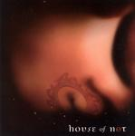

| Artist: | House Of Not |
| Title: | The Walkabout Of A. Nexter Niode Part 2 Sexus |
| Label: | FreakStreet Productions FSP-CDA02 |
| Length(s): | 61 minutes |
| Year(s) of release: | 2005 |
| Month of review: | [10/2005] |
| 1) | Seance | 1.42 |
| 2) | Voodoo Bitch | 3.37 |
| 3) | Whitehouse | 4.15 |
| 4) | Lady In Waiting | 3.42 |
| 5) | Icons | 4.30 |
| 6) | Is That The Best You Can Do? | 4.52 |
| 7) | Black Out | 2.07 |
| 8) | Footnotes/Hurt | 3.16 |
| 9) | State Of The Union | 4.12 |
| 10) | Behind The Veil | 5.47 |
| 11) | It's Your Mother | 5.09 |
| 12) | Secret Garden | 5.24 |
| 13) | Pipedream | 10.03 |
| 14) | Chase The Dragon | 2.31 |
On Whitehouse, the alternative rock feel dominates. The vocals are more rock like here, but Led Zeppelin is never really far away (but the vocals are quite different again) and thus the music not surprisingly is quite bluesy again. One starts to wonder why this band fits on this page. Well in a song like Lady In Waiting, the music does start with some mood building, and it is not surprising in view of the titles and the fact that this is a sequel, that this is in fact a concept album. The lone female vocals remind me of Pink Floyd and Roger Waters (it should not surprise you that again the vocals sound differently). A guitar groans in the back, while an acoustic guitar tinkles besides. A very sparse type of ballad.
Icons opens soundscapingly, but soon the drums set in to offer a bit of structure. We are back in the rock format, with a rather undistinctive vocal melody, again the lyrics are more spoken than sung. If you need references, I guess Nick Cave should give you a bit of an idea. Is That The Best You Can Do? continues the bluesy line established on this album (with a few deviations here and there). Although the loud groovy parts are quite okay (the chorus for instance), I think the band falls short in the verses. These are often flat, and hard to distinguish. We end moodily, before we move onto Black Out. This song has a much better vocal melody. Instruments wise it is simple combination of acoustic guitar and a bit of moody electronics in the back.
Footnotes/Hurt opens with somber piano building a nicely moody atmosphere. The guitar is definitely Floyd like, and good too. State Of The Union opens with spoken words, sarcastic ones. The music slowly builds up menacingly. This is indeed one of the best ones so far (in fact, it IS the best song on the album, or, if you like, the one I like most). Behind The Veil brings us back to the soundscape style, while the vocals are somewhat vocoded. The melodies are certainly improving on the second half of this disc, even if the vocals continue to more or less spoken like. The second half of this song is more up-beat, with a bit of a sixties feel. That is until the souly female backing vocals come back in and the electric guitar takes the reigns.
It's Your Mother is a bouncy tune, with a distinctive guitar sound, while Secret Garden turns out to be a long instrumental instead of a vocal track. It is still quite a bit short than Pipedream, which is in fact the longest song on this album, almost ten minutes. It starts off as a long bluesy excursion. You might be reminded somewhat of Shine On here. This one does have vocals, but those it has are not particularly intertesting.
Chase The Dragon is the relative short closer, a acoustic tune with a bit of friendly bounce. Singersongwriter stuff.